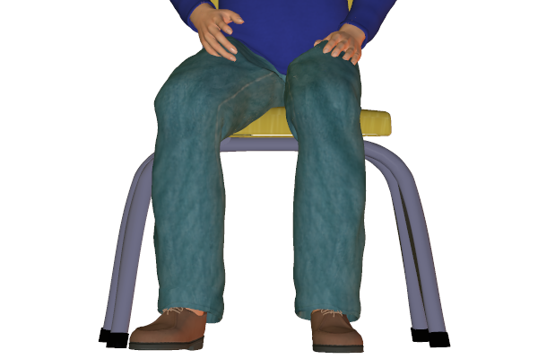
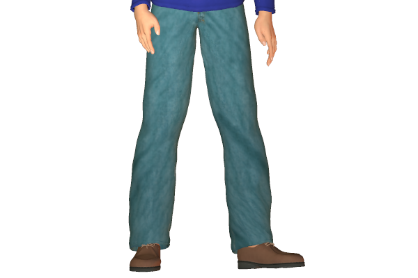
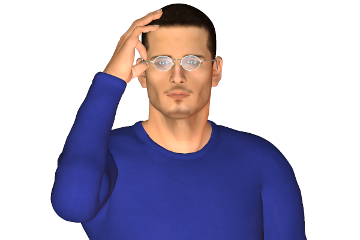

Bookmark added
-
head forward, upright
 interest, positive reactionLeaning towards the front indicates interest. Generally the forward leaning of the upper body commonly while sitting.
interest, positive reactionLeaning towards the front indicates interest. Generally the forward leaning of the upper body commonly while sitting. -
leg direction, sitting - generalinterest, attentiveness (according to direction)Generally the direction of knees points towards where the person is interested in. The more prominent the sitting position is, the intense the feeling of attraction or repulsion is.
-
uncrossed legs, sitting - general
 opennessOpen uncrossed leg positions indicate an open and relaxed attitude.
opennessOpen uncrossed leg positions indicate an open and relaxed attitude. -
crossing legs, sitting - specific change
 interest or disinterest in direction of upper crossed kneeThe upper crossed knee points to the direction of interest. If it points towards a person it indicates interest or enthusiasm towards him. These signs are more indicative when the person firsts sits down and makes his intial positions in relation to the people around him.
interest or disinterest in direction of upper crossed kneeThe upper crossed knee points to the direction of interest. If it points towards a person it indicates interest or enthusiasm towards him. These signs are more indicative when the person firsts sits down and makes his intial positions in relation to the people around him. -
legs intertwined, sitting (female)
 insecurity or sexual posingThis kind of sitting position could either be a sign of defence or sexual display by women.
insecurity or sexual posingThis kind of sitting position could either be a sign of defence or sexual display by women. -
feet or foot direction or pointingfoot direction indicates direction of interestKnees and feet tend to point towards the direction of interest. Usually can be observed while sitting in a group of people.
-
running hands through hair
 flirting, or vexation, exasperationThis sign is commonly associated with flirting. But can also be done when a person is exasperated or frustrated.
flirting, or vexation, exasperationThis sign is commonly associated with flirting. But can also be done when a person is exasperated or frustrated. -
removing spectaclesalerting wish to speakThis gesture is usually done when the person becomes alert or when he hears something that could shock him.
-
pumping handshake
 enthusiasmThe vigorous pumping handshake indicates enthusiasm of the shaker towards the other person. This is perceived as a sense of transferring energies between them and also to increase motivation.
enthusiasmThe vigorous pumping handshake indicates enthusiasm of the shaker towards the other person. This is perceived as a sense of transferring energies between them and also to increase motivation. -
shoe-play(female)
 relaxation, flirting, sexualA sign usually seen in women. This indicates a feeling of relaxation or a sexual feel.
relaxation, flirting, sexualA sign usually seen in women. This indicates a feeling of relaxation or a sexual feel.